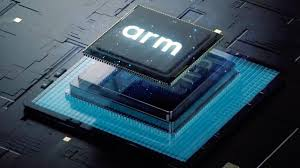

Az alternatívák előnyei
| Alternatíva | Előnyök | Kép |
|---|---|---|
| AMD Ryzen | Az AMD Ryzen processzorok kiemelkedő ár-érték arányt kínálnak, különösen a többmagos teljesítmény terén. Az utóbbi években az AMD folyamatosan innovál, versenyre kelve az Intellel a csúcsteljesítményű piacon. Az AMD Ryzen processzorok kiválóan teljesítenek játékokban és professzionális alkalmazásokban egyaránt. Az energiahatékonyságuk is figyelemre méltó, alacsonyabb hőtermeléssel és fogyasztással, ami hűvösebb és csendesebb működést eredményez. Emellett az AMD elkötelezett a felhasználói közösség támogatása iránt, rendszeres BIOS és driver frissítésekkel. Az árak általában alacsonyabbak, mint az Intel hasonló kategóriájú termékei, így a költségvetés-barát felhasználók számára is vonzó lehetőség. Az AMD processzorokkal rendelkező laptopok és asztali gépek széles választéka elérhető a piacon. A többmagos teljesítmény és a magas szintű párhuzamos feldolgozás ideálissá teszi az AMD Ryzent a kreatív munkákhoz, mint a videószerkesztés és 3D renderelés. Az AMD folyamatosan fejleszti és bővíti ökoszisztémáját, biztosítva, hogy a felhasználók hozzáférjenek a legújabb technológiákhoz és funkciókhoz. | .jpg) |
| Apple M1 | Az Apple M1 processzor forradalmasította a személyi számítógépek piacát, elképesztő teljesítményt és energiahatékonyságot kínálva. Az ARM architektúrára épülő M1 chip integrált memóriával rendelkezik, ami jelentősen javítja az adatfeldolgozási sebességet és csökkenti az energiafogyasztást. Az Apple M1 processzoros eszközök hosszabb akkumulátor-élettartamot kínálnak, így ideálisak mobil használatra. Az M1 chip bevezetése óta az Apple eszközök, mint a MacBook Air, MacBook Pro és Mac Mini, mind kiemelkedő teljesítményt nyújtanak, különösen az optimalizált macOS operációs rendszerrel. Az Apple ökoszisztémájába való integráció zökkenőmentes felhasználói élményt biztosít, az eszközök közötti egyszerű váltással és szinkronizálással. Az M1 processzor hatékony hőkezeléssel rendelkezik, ami csendes működést és alacsonyabb hőmérsékletet eredményez. Az Apple saját fejlesztésű GPU-ja kiváló grafikai teljesítményt nyújt, ami ideális a kreatív szakemberek számára. Az M1 chip AI-funkciói és gépi tanulási képességei új lehetőségeket nyitnak meg a fejlesztők és a felhasználók számára egyaránt. Az Apple M1 processzor innovatív architektúrája lehetővé teszi az alkalmazások gyorsabb futtatását és az erőforrások hatékonyabb kihasználását. Az M1 processzorral ellátott eszközök nemcsak teljesítményükben, hanem dizájnjukban és felhasználói élményükben is kiemelkednek. |  |
| ARM processzorok | Az ARM processzorok rendkívül sokoldalúak és széles körben használatosak, különösen a mobil eszközök és beágyazott rendszerek terén. Az ARM architektúra alacsony energiafogyasztásáról ismert, ami hosszabb akkumulátor-élettartamot biztosít a mobiltelefonok, tabletek és egyéb hordozható eszközök számára. Az ARM processzorok kiváló teljesítményt nyújtanak alacsony fogyasztás mellett, ami ideális a hőkezelés és az energiahatékonyság szempontjából. Az ARM architektúra licencelhető, ami lehetővé teszi számos gyártó számára, hogy saját igényeikre szabott processzorokat fejlesszenek. Ez a rugalmasság elősegítette az ARM technológia gyors terjedését a különböző piaci szegmensekben, beleértve az IoT eszközöket, okos otthonokat és ipari alkalmazásokat. Az ARM-alapú processzorok skálázhatósága lehetővé teszi, hogy kis teljesítményű mikrokontrollerektől a nagy teljesítményű szerverekig mindenhol megtalálhatóak legyenek. Az ARM ökoszisztéma támogatja a legújabb technológiai újításokat, mint a 5G és az AI, amelyek jelentősen javítják az eszközök képességeit és felhasználói élményét. Az ARM processzorokkal ellátott eszközök gyakran kisebbek és könnyebbek, ami további előnyt jelent a hordozhatóság szempontjából. Az ARM architektúra fejlesztése és optimalizálása folyamatos, ami biztosítja, hogy a felhasználók mindig a legmodernebb technológiát kapják. Az ARM processzorokkal rendelkező eszközök széles választéka elérhető, beleértve a prémium kategóriás okostelefonokat, tableteket és egyéb hordozható eszközöket. |  |
Összegzés
Az Intel alternatívák választása számos előnnyel jár, amelyek közül az AMD Ryzen, Apple M1 és ARM processzorok kiemelkednek. Mindegyik alternatíva egyedi előnyöket kínál, legyen szó ár-érték arányról, teljesítményről vagy energiahatékonyságról. Az ezekkel a processzorokkal szerelt eszközök biztosítják, hogy a felhasználók a lehető legjobb technológiát kapják, amely megfelel az egyéni igényeiknek és elvárásaiknak.